Un thème de l'épreuve d'économie et gestion de l'entreprise (U3, coefficient 5) du BTS Opticien-Lunetier. Il est tombé à 3 des 5 sessions analysées. Sur cette page : 5 définitions à savoir et 3 questions corrigées.
Les charges variables évoluent avec l'activité ; les charges fixes restent les mêmes quel que soit le chiffre d'affaires.
Pour comprendre : Variables : achats de verres et montures vendus. Fixes : loyer, assurance, salaires fixes, amortissements.
À savoir par cœur
Marge sur coût variable (MCV)
Probable
Utilisée dans les sujets 2018, 2019, 2023
Chiffre d'affaires moins les charges variables ; elle sert à couvrir les charges fixes.
Pour comprendre : Le taux de MCV est la MCV divisée par le chiffre d'affaires.
À savoir par cœur
Seuil de rentabilité (SR)
Probable
Utilisée dans les sujets 2018, 2019, 2023
Chiffre d'affaires pour lequel le résultat est nul. SR = charges fixes / taux de MCV.
Pour comprendre : En dessous on perd de l'argent, au-dessus on en gagne.
À savoir par cœur
Compte de résultat différentiel
Probable
Utilisée dans le sujet 2019
Présentation du résultat qui sépare charges variables et charges fixes : CA − charges variables = MCV, puis MCV − charges fixes = résultat.
Pour comprendre : Il prépare le calcul du seuil de rentabilité.
Point mort
Probable
Utilisée dans le sujet 2019
Date de l'année à laquelle le seuil de rentabilité est atteint : SR / CA × durée d'activité.
Pour comprendre : La durée d'activité se compte en 12 mois, 360 jours ou nombre de jours d'ouverture.
Trois questions corrigées
Cherche d'abord ta réponse, puis ouvre la correction.
Type BTS 2019 · Niveau facile
Même magasin : SR = 225 000 €, CA annuel = 300 000 €, activité régulière toute l'année. À quelle date le point mort est-il atteint ?
Fin août
Fin septembre
Fin octobre
Fin juin
Voir la correction de la question 1
Réponse B. Fin septembre
Point mort = SRCASR sur CA × 12 mois = 225 000300 000(225 000) sur (300 000) × 12 = 0,75 × 12 = 9 moisSoit fin septembre.Si le magasin ferme un mois (par exemple en août), on compte sur les jours ou les mois réellement travaillés.

Type BTS 2019 · Niveau moyen
Chiffre d'affaires HT : 300 000 €. Charges variables : 120 000 €. Charges fixes : 135 000 €. Quel est le seuil de rentabilité ?
255 000 €
225 000 €
180 000 €
337 500 €
Voir la correction de la question 2
Réponse B. 225 000 €
Marge sur coût variable = 300 000 − 120 000 = 180 000 €Taux de MCV = 180 000300 000(180 000) sur (300 000) = 0,60, soit 60 %Seuil de rentabilité = charges fixestaux de MCV(charges fixes) sur (taux de MCV)= 135 0000,60(135 000) sur 0,60 = 225 000 €C'est le CA à partir duquel le magasin ne perd plus d'argent.
Type BTS 2019 · Niveau moyen · Calcul
CA : 420 000 € HT. Charges variables : 147 000 €. Charges fixes : 189 000 €. Calcule le seuil de rentabilité (arrondi à l'euro).
Réponse attendue en € HT, arrondie à l'unité.
Voir la correction de la question 3
Réponse : 290 769 € HT.
MCV = 420 000 − 147 000 = 273 000 €Taux de MCV = 273 000420 000(273 000) sur (420 000) = 0,65, soit 65 %SR = 189 0000,65(189 000) sur 0,65 = 290 769,23 €, soit 290 769 € HT.
Le QCM compte 6 questions sur ce thème. Chacune est corrigée et expliquée, et celles que tu rates reviennent toutes seules à 1, 3, 7, 14 et 30 jours.